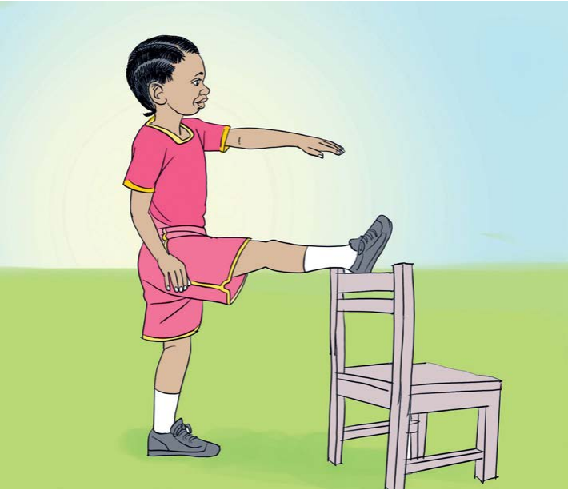

Tujinyooshe miili yetu
Jinsi ya kujinyoosha kwa kutumia kiti
- Weka mguu wa kulia juu ya kiti.
- Nyoosha mkono wa kushoto.
- Shusha mguu wa kulia.
- Weka mguu wa kushoto kwenye kiti.
- Nyoosha mkono wa kulia.
- Rudia kufanya vitendo hivyo mara nyingi.
